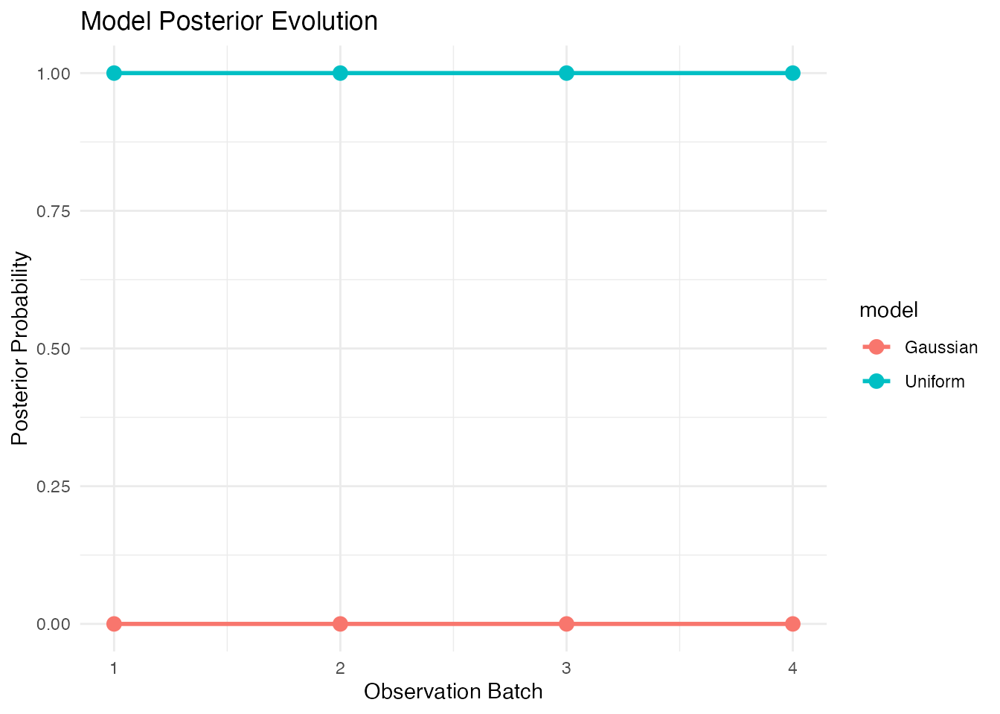
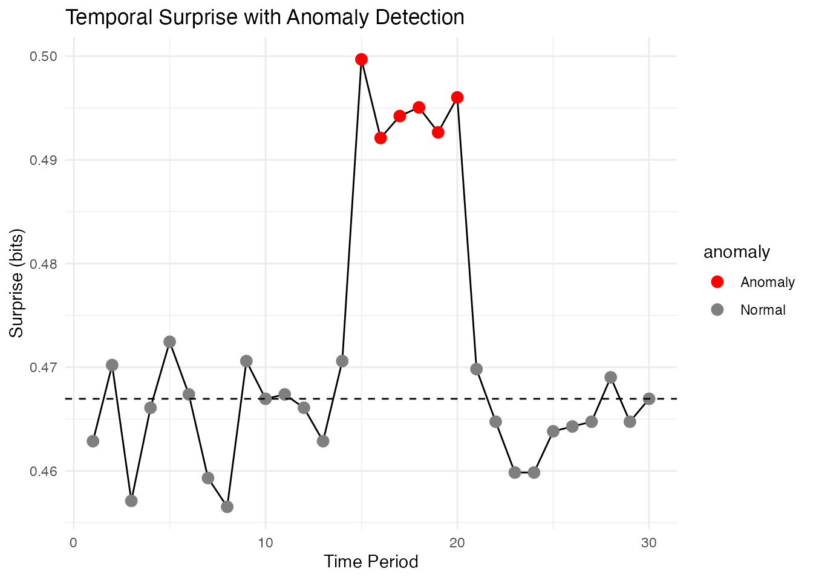

library(bayesiansurprise)
#> bayesiansurprise: Bayesian Surprise for De-Biasing Thematic Maps
#> Inspired by Correll & Heer (2017) - IEEE InfoVis
library(ggplot2)
#> Warning: package 'ggplot2' was built under R version 4.5.2Overview
The bayesiansurprise package supports temporal analysis
and streaming data through specialized functions that track how surprise
evolves over time.
Temporal Analysis with surprise_temporal()
For panel data with observations across multiple time periods:
# Create example temporal data
set.seed(42)
temporal_data <- data.frame(
year = rep(2015:2024, each = 5),
region = rep(c("North", "South", "East", "West", "Central"), times = 10),
cases = rpois(50, lambda = rep(c(50, 80, 60, 70, 90), times = 10)),
population = rep(c(10000, 20000, 15000, 18000, 25000), times = 10)
)
head(temporal_data)
#> year region cases population
#> 1 2015 North 59 10000
#> 2 2015 South 74 20000
#> 3 2015 East 60 15000
#> 4 2015 West 60 18000
#> 5 2015 Central 88 25000
#> 6 2016 North 60 10000
# Compute temporal surprise
# Note: Use unquoted column names (NSE)
result <- surprise_temporal(
temporal_data,
time_col = year,
observed = cases,
expected = population,
region_col = region
)
print(result)
#> <bs_surprise_temporal>
#> Time periods: 10
#> Time range: 2015 to 2024
#> Models: 3Streaming Updates
For real-time data where observations arrive sequentially:
# Initial observation
initial_obs <- c(50, 100, 75, 90)
initial_exp <- c(10000, 20000, 15000, 18000)
result <- auto_surprise(initial_obs, initial_exp)
mspace <- get_model_space(result)
cat("Initial prior:", round(mspace$prior, 3), "\n")
#> Initial prior: 0.333 0.333 0.333
# If you want posterior model weights for the initial batch, update explicitly.
updated_mspace <- bayesian_update(mspace, initial_obs)
cat("Initial posterior:", round(updated_mspace$posterior, 3), "\n")
#> Initial posterior: 0.31 0.345 0.345
# New observation arrives
new_obs <- c(55, 110, 80, 85)
updated <- update_surprise(result, new_obs, new_expected = initial_exp)
mspace2 <- get_model_space(updated)
cat("Updated posterior:", round(mspace2$posterior, 3), "\n")
#> Updated posterior: 0.431 0.46 0.109
# Another observation
newer_obs <- c(60, 105, 70, 95)
updated2 <- update_surprise(updated, newer_obs, new_expected = initial_exp)
mspace3 <- get_model_space(updated2)
cat("Further updated posterior:", round(mspace3$posterior, 3), "\n")
#> Further updated posterior: 0.443 0.516 0.041Cumulative Bayesian Updates
Track how the model space posterior evolves as more data accumulates:
# Create model space
space <- model_space(
bs_model_uniform(),
bs_model_gaussian()
)
# Sequential observations
obs_sequence <- list(
c(10, 20, 30, 40),
c(15, 25, 35, 45),
c(12, 22, 32, 42),
c(50, 60, 70, 80) # Anomalous batch
)
# Track posteriors
posteriors <- matrix(nrow = length(obs_sequence), ncol = 2)
current_space <- space
for (i in seq_along(obs_sequence)) {
current_space <- bayesian_update(current_space, obs_sequence[[i]])
posteriors[i, ] <- current_space$posterior
}
# Plot evolution
df_post <- data.frame(
batch = rep(1:4, 2),
model = rep(c("Uniform", "Gaussian"), each = 4),
posterior = c(posteriors[, 1], posteriors[, 2])
)
ggplot(df_post, aes(x = batch, y = posterior, color = model)) +
geom_line(linewidth = 1) +
geom_point(size = 3) +
labs(
title = "Model Posterior Evolution",
x = "Observation Batch",
y = "Posterior Probability"
) +
theme_minimal()
Rolling Window Analysis
Use rolling windows to detect changes in patterns:
# Single time series
observations <- c(50, 52, 48, 55, 120, 115, 125, 60, 58, 62,
55, 53, 57, 150, 145, 155, 52, 54, 56, 51)
expected_vals <- rep(500, 20)
result_rolling <- surprise_rolling(
observations,
expected = expected_vals,
window_size = 5
)
# Extract mean surprise for each window
window_surprise <- sapply(result_rolling$windows, function(w) mean(w$result$surprise))
# Plot
plot(seq_along(window_surprise), window_surprise, type = "l",
xlab = "Window Position", ylab = "Mean Surprise",
main = "Rolling Window Surprise")Anomaly Detection Over Time
Use temporal surprise to detect anomalous time periods:
# Simulate data with anomaly at time 15-20
set.seed(123)
n_times <- 30
baseline <- 100
normal_obs <- rpois(n_times, lambda = baseline)
normal_obs[15:20] <- rpois(6, lambda = 200) # Anomaly period
# Compute surprise for each time point
surprise_vals <- numeric(n_times)
expected_const <- 1000
for (t in 1:n_times) {
result_t <- auto_surprise(normal_obs[t], expected_const)
surprise_vals[t] <- result_t$surprise
}
# Plot with anomaly highlighted
df_plot <- data.frame(
time = 1:n_times,
surprise = surprise_vals,
anomaly = ifelse(1:n_times %in% 15:20, "Anomaly", "Normal")
)
ggplot(df_plot, aes(x = time, y = surprise)) +
geom_line() +
geom_point(aes(color = anomaly), size = 3) +
scale_color_manual(values = c("Normal" = "gray50", "Anomaly" = "red")) +
geom_hline(yintercept = median(surprise_vals), linetype = "dashed") +
labs(
title = "Temporal Surprise with Anomaly Detection",
x = "Time Period",
y = "Surprise (bits)"
) +
theme_minimal()
Best Practices
- Choose appropriate window sizes: For rolling analysis, balance responsiveness vs. stability
-
Use streaming for real-time applications:
update_surprise()is efficient for incremental updates - Normalize expected values: Ensure expected values are on the same scale as observations
- Consider seasonality: For periodic data, compare to same-period baselines
- Set thresholds carefully: Use domain knowledge to determine what surprise level is actionable